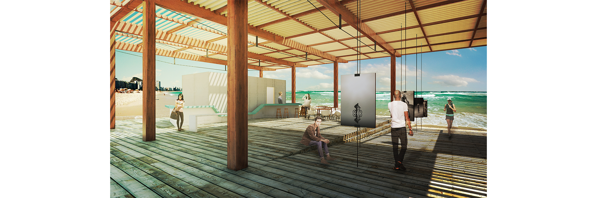
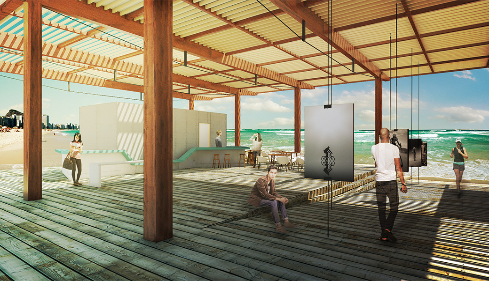
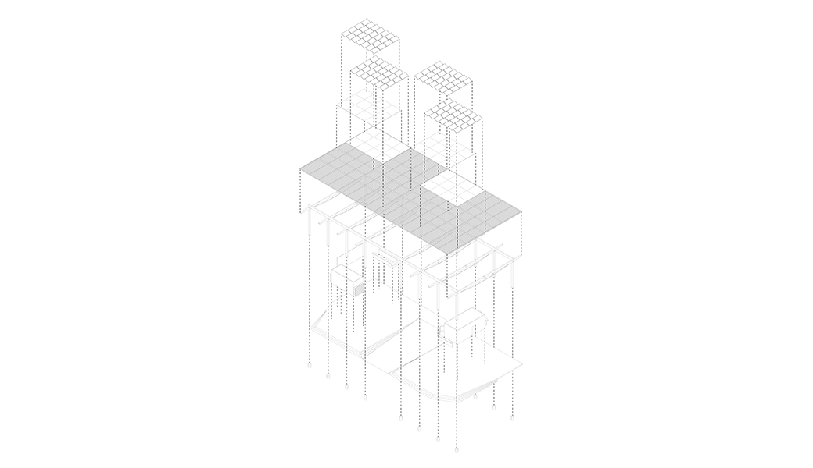

A building of itinerant, portable, and democratic character implies a modular design, composed of versatile, spacious, and open spaces. The fluidity and continuity of the environments are imperative to optimize their uses and transform them into places of permanence. Thus, aiming at the project of an information point for the Olympics on Copacabana Beach in Rio de Janeiro, an extremely lightweight and easily assembled construction was conceived here, with a subtle lighting design and framing of the sea through a large ramp, which would be the main circulation axis (connecting the entrance of the Museum of Image and Sound - MIS - to the sea) and would also function as an exhibition space.
The project is primarily composed of a series of wooden structures forming 15-meter spans and 2.5-meter balconies on both sides. These would also be formed by box beams with steel uprights, which, by exerting a counter-curve on the large cantilever, would allow the primary use of wood in bending. Its assembly would take place on the ground and, subsequently, would be lifted by cranes and positioned on concrete footings that would use tires as formwork. The bracing would be done with a wooden grille, which would filter the light in the pavilion. The walls dividing the spaces would be constructed with wood-frame panels covered with cementitious boards. All these aspects of the construction system would allow for an extremely efficient and rapid assembly of the work, and its replicability in various situations.
For the provided implementation, which is part of the Olympic Triathlon route, a project with elements that refer to the three exercises that make up this test was considered: the ramp, the use of external showers and lockers, and the bike rack (which also connects with the bike path that runs through the beach) are all equipment that addresses the issue of sports. The large void that makes up the sports area can be used for classes and practices that promote physical activity.
In the application of the program, simplicity was a paradigmatic aspect. Simple forms were determined with the volumes, enclosing environments only when necessary (in the service area and bathrooms). The store was connected to the café through a single fixed piece of furniture that recalls the curves of the sea, the sidewalk, and the nearby museum, functioning as both a counter and a bench.